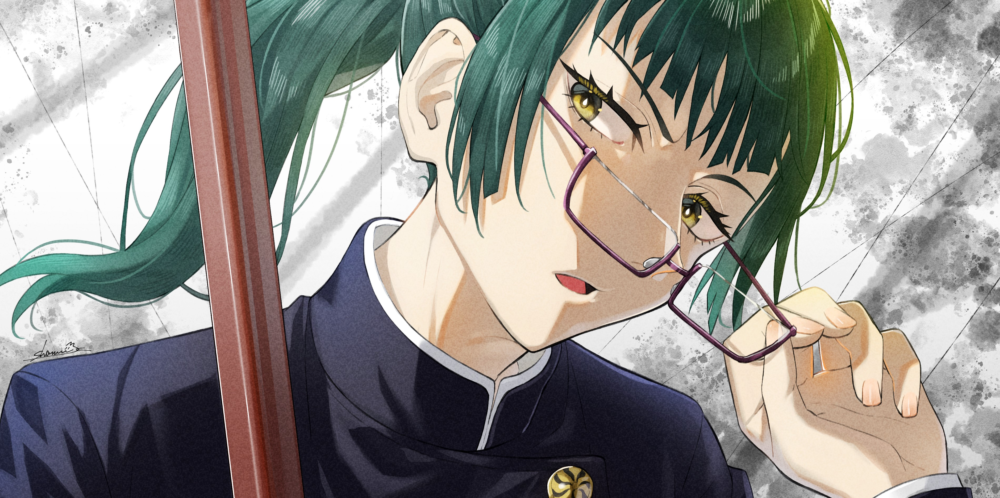
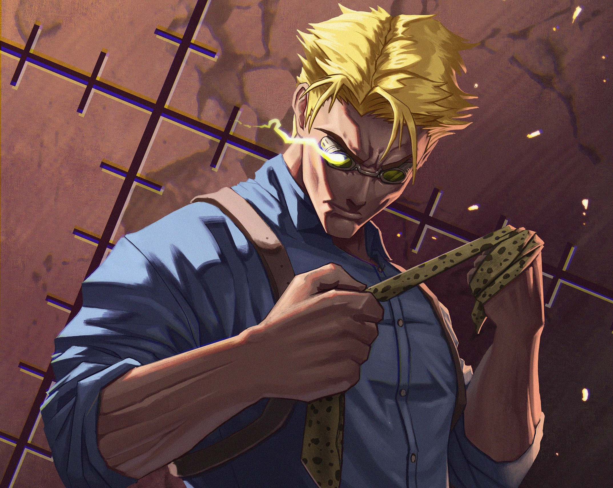
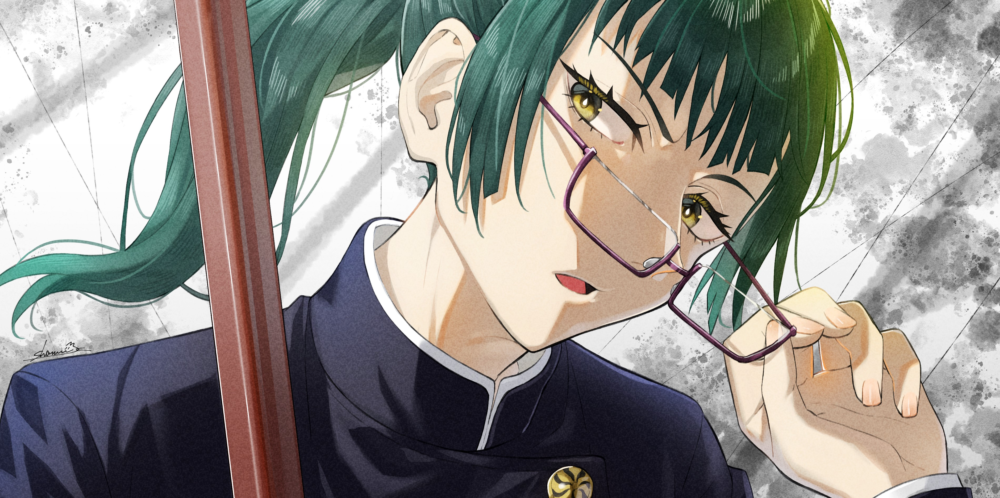
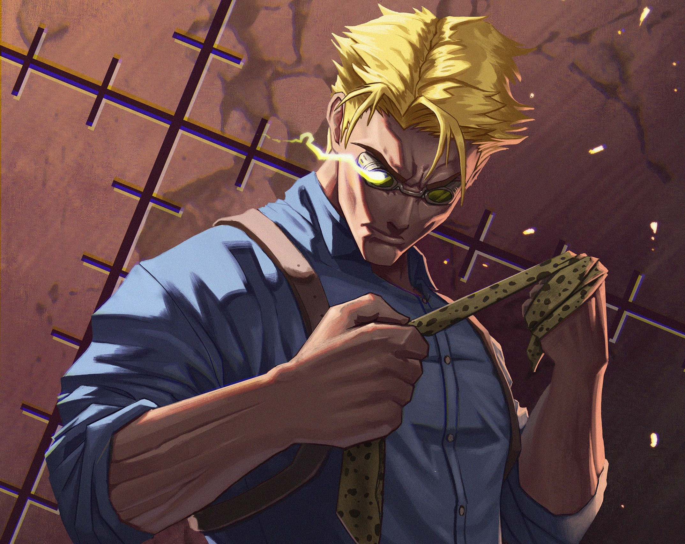
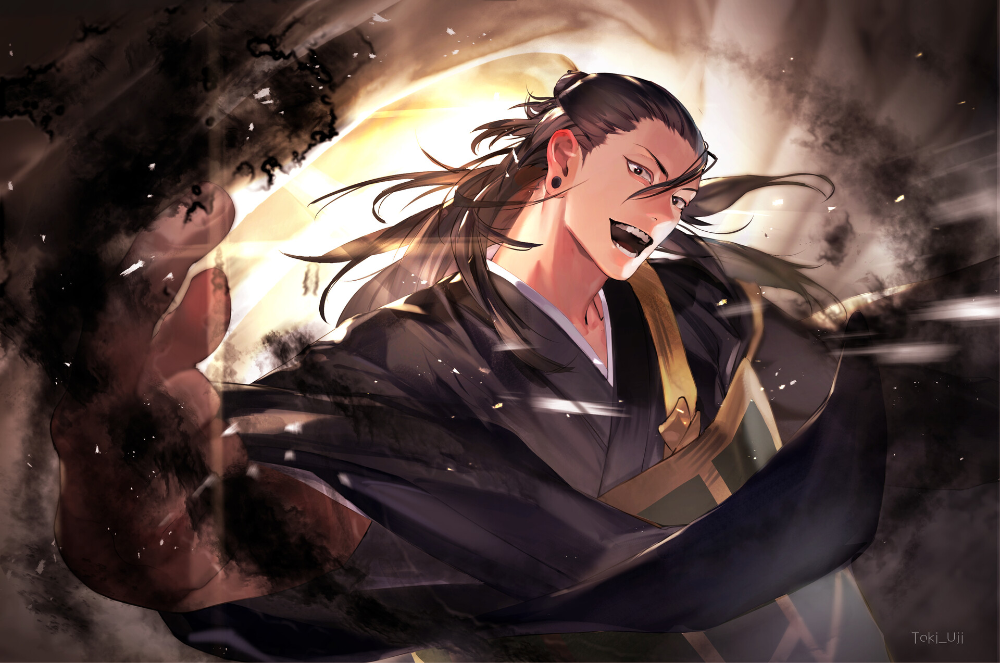
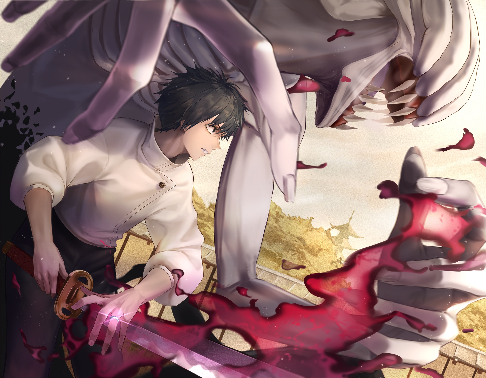
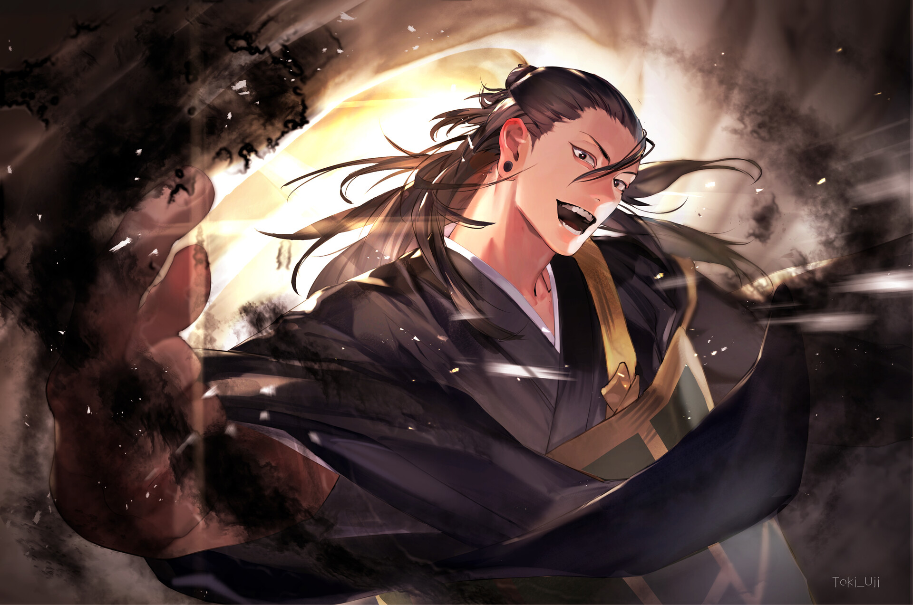
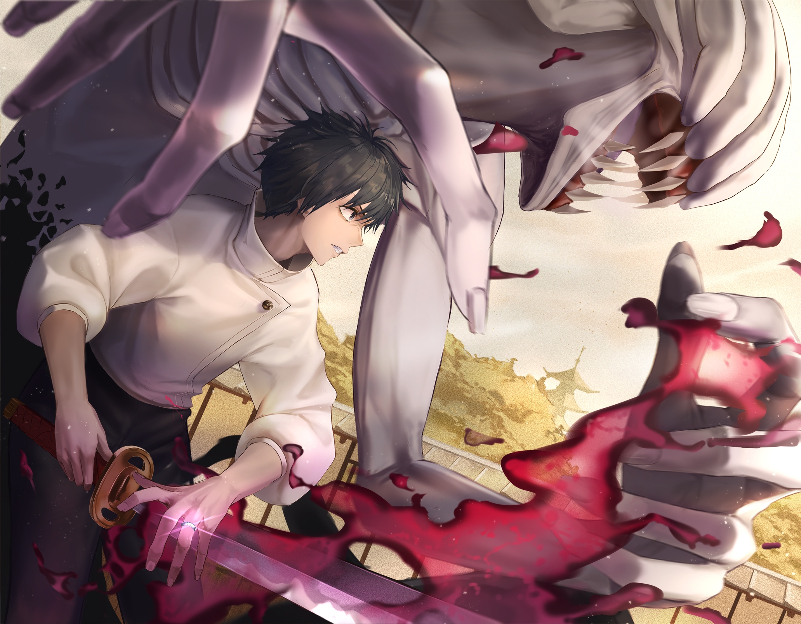

Yuji Itadori
Yuji Itadori, o protagonista de "Jujutsu Kaisen", é um estudante do ensino médio com habilidades atléticas notáveis. Sua vida toma um rumo sombrio quando ele se depara com um objeto amaldiçoado e eventos sobrenaturais. Ao absorver um dedo amaldiçoado para salvar seus amigos, Yuji se torna uma peça crucial em uma guerra contra maldições. Determinado e corajoso, ele se junta à Escola Técnica de Feiticeiros para aprender a controlar maldições e proteger aqueles que ama. Yuji destaca-se não apenas por suas habilidades físicas, mas também por sua compaixão e determinação em enfrentar o sobrenatural.


 




 


